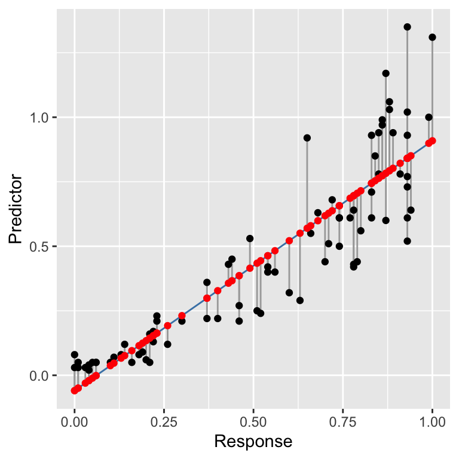
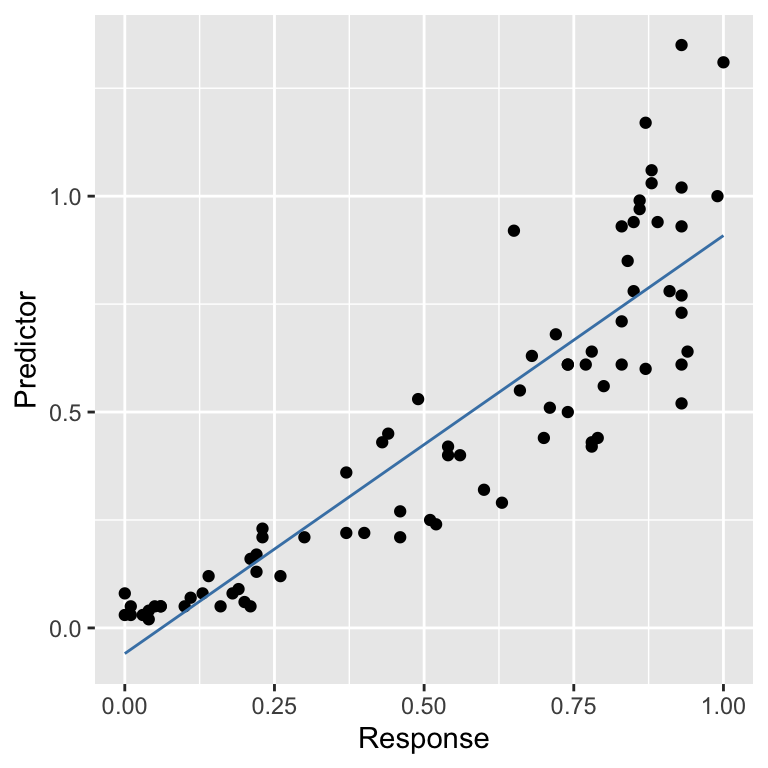
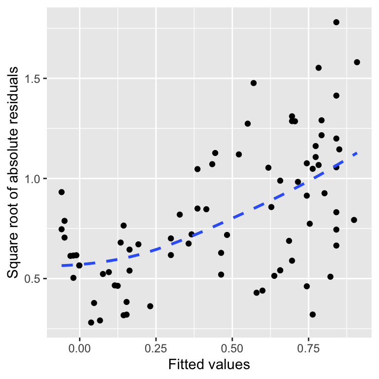
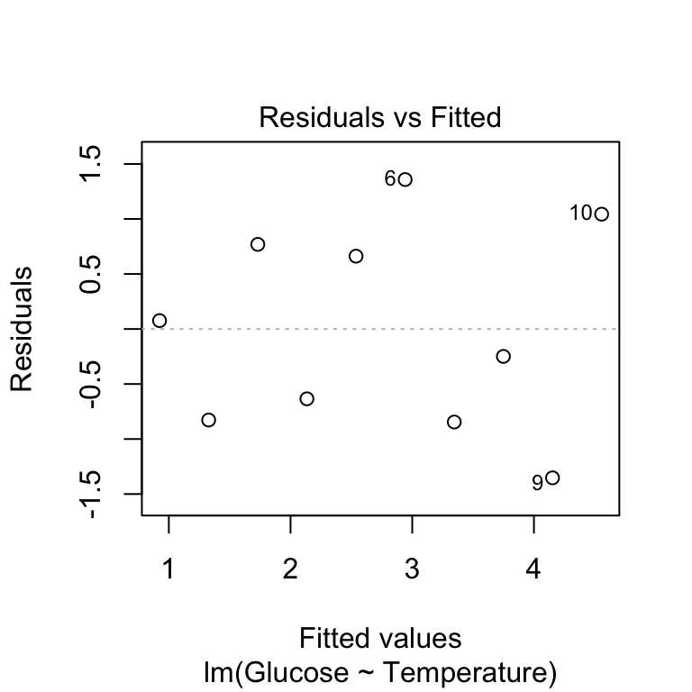

Chapter 20 Assumptions and diagnostics
We often have a statistical analysis in mind when we collect some data. Though it can be tempting to jump straight into that analysis without first examining the data, this is seldom a good idea. We began each investigation in the last few chapters by inspecting the data set to understand what it was telling us. The initial inspection also provides an opportunity to evaluate whether or not our planned analysis assumptions are likely to be violated.
Assumptions are important. We learnt in previous chapters that regression and ANOVA are special cases of the general linear model. This is a parametric model, which makes several assumptions about the data that we need to be aware of. If our data do not meet those assumptions, at least approximately, then we cannot rely on the results given by any associated tests. This chapter aims to review those assumptions for simple regression and one-way ANOVA models.
20.1 Understanding data
We’ve been using ‘well-behaved’ data sets in this book so far, which tends to give the impression that visual inspections of the data are not all that necessary. Here’s an example of why it matters. Imagine we are interested in quantifying the relationship between two variables called \(x\) and \(y\). We might be tempted to carry out a linear regression analysis without first inspecting these data to get straight to ‘the answer’: the coefficients of the linear regression model. This could be very misleading. Take a look at these four scatter plots:

These four artificial data sets were constructed by the statistician Francis Anscombe. The means and variances of \(x\) and \(y\) are nearly identical in all four data sets. What’s more, the intercepts and slopes of the best fit regression lines are almost identical—they are 3.0 and 0.5, respectively. The nature of the relationship between \(x\) and \(y\) is quite obviously different among the four cases:
“Case 1” shows two linearly related, normally distributed variables. This is the kind of data we often hope for in a statistical analysis.
“Case 2” shows two variables that are not normally distributed, but there is a perfect non-linear relationship between the two.
“Case 3” shows an example the variables are perfectly linearly associated for all but one observation which ruins the perfect relationship.
“Case 4” shows an example where a single outlier generates an apparent relationship where the two variables are otherwise unrelated.
Each plot tells a different story about the relationship between \(x\) and \(y\), yet the linear regression model says the relationship is the same in each case. These are obviously somewhat pathological examples, but they illustrate the issues that can and do arise with real data. There is a real risk we will apply an inappropriate analysis if we fail to detect such problems.
Every statistical model makes certain assumptions about the data16. Even if a dataset doesn’t exhibit the pronounced problems seen in the Anscombe examples, we still need to assess whether the assumptions of the statistical model we want to use are likely to be valid. For example, when working with a linear regression model, we started with a scatter plot of the response variable vs the predictor variable. This allowed us to assess whether the two variables are linearly related. However, as we noted at the time, linearity is not the only assumption we need to consider when carrying out a linear regression. In the rest of this chapter, we’ll go through the remaining regression assumptions and then consider the assumptions for a one-way ANOVA.
In the later regression diagnostics chapters, we’ll move on to how to check whether these assumptions are valid with your data.
20.2 Assumptions of regression
Let’s consider each of the assumptions of regression in their approximate order of importance:
Independence. The residuals must be independent. Another way of stating this assumption is that the value of each residual does not depend on the value of any others. This can be difficult to check. If the data are from a carefully designed experiment, everything should be OK. If the data are observational, then we need to be a lot more careful. This assumption matters because when the residuals are not independent, any p-values we generate will be unreliable.
Measurement scale. The response (\(y\)) and predictor (\(x\)) variables are measured on an interval or ratio scale. It doesn’t really make sense to use categorical data in a regression17. This one is easy to assess.
Linearity. The relationship between the predictor \(x\) variable and the response \(y\) variable is linear. There is little point in fitting a straight line to data that don’t form a straight-line relationship. There may also be circumstances in which it is theoretically unlikely for a relationship to be linear, e.g. a linear relationship will not well describe the length and weight of an animal because weight is roughly a cubic function of length.
Constant variance. The variance of the residuals is constant. This assumption essentially means the variability of the residuals is not related to the value of the predictor \(x\) variable. It is violated if the magnitudes of the residuals increase or decrease markedly as \(x\) gets larger.
Normality. The residuals are drawn from a normal distribution. This essentially means that for a particular value of \(x\) we expect a range of responses in \(y\) which follow a normal distribution. Note that the distribution of the residuals is assumed to be normal, not the raw \(y\) values. This means we can generally only test this assumption after the model has been fitted. Note that regression is reasonably robust to small departures from normality, but larger departures can start to matter.
Measurement error. The values of the predictor \(x\) variable are determined with negligible measurement error18. It is usually impossible to obtain the \(x\) values with absolutely no measurement error, but the error \(x\) in should at least be much smaller than that in the \(y\) values. For example, in a thermal tolerance experiment, the temperature values set by the experimenter will often have low error, so it is fine to use simple regression.
Assumptions 1 (independence), 2 (measurement scale) and 6 (measurement error) are features of experimental design and data collection protocols. The only way to evaluate these assumptions is by thinking about where the data come from rather than examining them somehow. If it seems likely that one of these assumptions is violated, there’s not much we can do about it after the data have been collected. This is why it’s so important to consider how we will collect and analyse a data set before going ahead with the work. There’s no point expending vast amounts of time and effort to collect data that we can’t then usefully analyse.
What about the remaining assumptions: linearity, constant variance and normality? These can be checked using a set of visual tools called ‘regression diagnostics’. Regression diagnostics use properties of the fitted model to understand how well it fits the data and thereby evaluate the model assumptions. This means they can only be applied after we have fitted a model to the data.
20.3 Regression diagnostics
The best way to learn about regression diagnostics by working through an example. Our goal is to learn how to check the linearity, constant variance and normality assumptions by creating a specific diagnostic plot for each one.
These data can be found in the ‘DIAGNOSTICS_EG.CSV’ file. The code below assumes they have been read into a tibble called example. Set that up if you plan to work along.
The data set contains two numeric variables: Predictor and Response:
## Rows: 80
## Columns: 2
## $ Predictor <dbl> 0.00, 0.00, 0.01, 0.01, 0.03, 0.04, 0.04, 0.05, 0.06, 0.06, …
## $ Response <dbl> 0.08, 0.03, 0.05, 0.03, 0.03, 0.04, 0.02, 0.05, 0.05, 0.05, …The precise details of where the data come from are not important in this example. All we need to know is that the goal is to construct a regression model to understand how Predictor depends on Response. We can show their relationship using a scatter plot:

It is worth spending a bit of time staring at that plot. Does it look like these data satisfy the linearity assumption? What about the constant variance assumption? Can we say anything about the normality of the residuals from a plot like this?
20.3.1 Fitted values
To understand regression diagnostics we have to know what a fitted value is. The phrase ‘fitted value’ is simply another expression for ‘predicted value’. Look at the plot below:
This shows the raw data (black points), the line of best fit (blue line), the residuals (the vertical grey lines), and the fitted values (red points). The line of best fit was created using the workflow we introduced in the regression chapter, using the following fitted model:
How do we find the fitted values? Draw a vertical line from each observation to the line of best fit. The values of the response variable at the point where these meet the line of best fit are the ‘fitted values’. The fitted values are just predictions from the statistical model generated for each value of the predictor variable.
In reality, R does this for us. If we ever need to find the fitted values of a model we can extract these with the fitted function:
## 1 2 3 4 5 6 7 8 9 10 11 12 13 14 15 16
## -0.1 -0.1 0.0 0.0 0.0 0.0 0.0 0.0 0.0 0.0 0.0 0.0 0.1 0.1 0.1 0.1
## 17 18 19 20 21 22 23 24 25 26 27 28 29 30 31 32
## 0.1 0.1 0.1 0.1 0.2 0.2 0.2 0.2 0.2 0.2 0.3 0.3 0.3 0.4 0.4 0.4
## 33 34 35 36 37 38 39 40 41 42 43 44 45 46 47 48
## 0.4 0.4 0.4 0.4 0.5 0.5 0.5 0.5 0.6 0.6 0.6 0.6 0.6 0.6 0.6 0.7
## 49 50 51 52 53 54 55 56 57 58 59 60 61 62 63 64
## 0.7 0.7 0.7 0.7 0.7 0.7 0.7 0.7 0.7 0.7 0.7 0.8 0.8 0.8 0.8 0.8
## 65 66 67 68 69 70 71 72 73 74 75 76 77 78 79 80
## 0.8 0.8 0.8 0.8 0.8 0.8 0.8 0.8 0.8 0.8 0.8 0.8 0.8 0.9 0.9 0.920.3.2 Checking the linearity assumption
The linearity assumption states that the general relationship between the response and predictor variable should look like a straight line. We can evaluate this assumption by constructing a residuals vs fitted values plot.
We can make this in two steps. First, use the fitted and resid functions to construct a data frame containing the fitted values and residuals from the model (called plt_data):
Once we have made this data frame, we use ggplot2 to plot the residuals against the fitted values:
ggplot(plt_data, aes(x = Fitted, y = Resids)) +
geom_point() +
geom_smooth(span = 2, se = FALSE, linetype = 2) +
xlab("Fitted values") + ylab("Residuals")## `geom_smooth()` using method = 'loess' and formula = 'y ~ x'
For a well-behaved model, there should be no relationship between the residuals and fitted values. In general terms, a pattern in this plot indicates that some aspect of the relationship between the predictor and response variables is not captured by the model we used. We added that blue trend line using geom_smooth to help reveal the pattern. This shows that the residuals tend to be positive at the largest and smallest fitted values and generally negative in the middle of the range. This u-shaped pattern is indicative of a potential problem with our model.
We can see where this pattern comes from when we look at the raw data and the fitted model:
There is some curvature in the relationship between the two variables, yet we fitted a straight line through the data. The U-shape in the residuals vs fitted values plot arises because there is an ‘accelerating’ (or ‘convex’) relationship between the response and predictor variables that we failed to capture with the model. In other words, the pattern in the diagnostic plot is telling us that the true relationship is non-linear.
What other kinds of patterns might we see in a residuals vs fitted values plot? Many things are possible, but a hump-shape is another very common pattern. This corresponds to the case where the residuals tend to be negative at the largest and smallest fitted values and positive in the middle of the range. A hump shape in the residuals vs fitted values plot will arise when there is a ‘decelerating’ (or ‘concave’) relationship between the response and predictor variables that we failed to capture with the model.
This may seem like a lot of extra work to evaluate an aspect of the model that we can assess by plotting the data. This is true when we are working with a simple linear regression model. However, it is much harder to evaluate the linearity assumption when working with more complicated models that include multiple predictor variables19. In that situation, a residuals vs fitted values plot gives us a powerful way to evaluate whether or not the assumption of a linear relationship is reasonable.
That’s enough about residuals vs fitted values plots. Let’s move on to the normality evaluation.
20.3.3 Checking the normality assumption
How do we evaluate the normality assumption of linear regression? We need to assess whether or not the residuals are drawn from a normal distribution. One way to do this is by extracting the residuals from a model and plotting their distribution with a histogram of dot plot. However, there is a more powerful graphical tool: the normal probability plot.
A normal probability allows us to identify departures from normality. If we know what we are looking for, we can use it to identify many different kinds of problems. We will focus on the most common type of assessment: determining whether the distribution of the residuals is excessively skewed. A skewed distribution is one that is not symmetric. For example, the first distribution below is skewed to the left (‘negative skew’), the second is skewed to the right (‘positive skew’), and the third is symmetric (‘zero skew’):
The skewness in the first two distributions is easy to spot because they contain a lot of data and the asymmetry is quite pronounced. A normal probability plot allows us to pick up potential problems when we are not so lucky.
The methodology underlying the construction of a normal probability plot is quite technical, so don’t worry if the next segment is confusing—interpreting a normal probability plot is much easier than making one. We start by extracting the residuals from the fitted model into a numeric vector using the resids function, and then standardise these by dividing them by their standard deviation:
# 1. extract the residuals
mod_resids <- resid(example_mod)
# 2. standardise them
mod_resids <- mod_resids / sd(mod_resids)The standardisation step is not essential, but dividing the residuals by their standard deviation ensures that the standard deviation of the new residuals is equal to 1. Standardising the residuals this way makes it a little easier to compare more than one normal probability plot. We call these new residuals the ‘standardised residuals’.
The next step is to find the rank order of each residual. To do this, we sort the data from lowest to highest and find the position of each case in the sequence (its ‘rank’). The function order can do this for us:
## [1] 74 53 54 55 41 75 78 36 40 35 66 45 32 49 56 57 46 33 76 29 19 39 28 51 18
## [26] 25 71 37 52 48 50 15 38 70 16 17 59 43 22 26 11 13 20 21 62 12 44 7 47 14
## [51] 24 9 10 5 6 8 27 23 30 4 31 77 2 60 3 79 34 69 1 61 72 58 64 63 67
## [76] 68 42 65 80 73This tells us that the first residual is the 74th largest, the second is the 53rd largest, the third is the 54th largest, and so on.
The last step is the tricky one. Once we have established the rank order of the residuals, we ask the following question: if the residuals were drawn from a normal distribution, what is their most likely value based on their rank? We can’t explain how to do this without delving into the mathematics of distributions, so this will have to be a ‘trust us’ situation.
As usual, R can do the hard calculations for us. We don’t even need the ranks—we only calculated those to help explain what happens when we build a normal probability plot. The function we need is called qqnorm:
The qqnorm doesn’t produce a data frame by default, so we converted the result using a function called as.data.frame.
The all_resids object is now a data frame with two variables: x contains the theoretical values of normally distributed residuals based on the rank orders of the residuals from the model, and y contains the standardised residuals. Here are the first 10 values:
## x y
## 1 1.0636219 0.8684423
## 2 0.7764218 0.5570255
## 3 0.8641600 0.6212898
## 4 0.6549499 0.4967230
## 5 0.4364642 0.3761182
## 6 0.4711971 0.3780992
## 7 0.2372021 0.2535324
## 8 0.5065081 0.3800801
## 9 0.3685006 0.3197777
## 10 0.4022501 0.3197777Finally, we can plot these against one another to make a normal probability plot:
ggplot(all_resids, aes(x = x, y = y)) +
geom_point() +
geom_qq_line(aes(sample = y), colour = "blue", size = 1, linetype = 2) +
xlab("Theoretical Value") + ylab("Standardised Residual")## Warning: Using `size` aesthetic for lines was deprecated in ggplot2 3.4.0.
## ℹ Please use `linewidth` instead.
## This warning is displayed once every 8 hours.
## Call `lifecycle::last_lifecycle_warnings()` to see where this
## warning was generated.
At the beginning of this section, we said that it’s not essential to understand how a normal probability plot is constructed. It’s only important to know how to interpret one. The critical feature to look out for is the curvature of the relationship between the standardised residuals and their theoretical values. If the residuals really were drawn from a normal distribution, they should generally match the theoretical values, and the points should lie on a straight line.
What we are looking for are systematic deviations from the expected relationship. We used geom_qq_line to help us make this assessment. The details aren’t too important, but in a nutshell, geom_qq_line adds a line to summarise the expected relationship based on the middle 50% of residuals. Deviations from that line relationship at either end of the normal probability plot suggest a departure from normality.
That is what we see above. The largest positive residuals on the right-hand side of the plot lie above the line. What’s more, they start to move above the line and then get further away from it as we continue rightward. This is telling us something about the distribution of the residuals. It suggests their distribution is skewed to the right (‘positive skew’). To see this, we can visualise their distribution as a dot plot:
This shows the asymmetry in the distribution of the residuals—the left ‘tail’ is bunched up toward the middle of the distribution, while the right tail stretches away from it.
Normal probability plots are useful because they better reveal potential distributional problems than histograms or dot plots of raw residuals. This is particularly true when we have a small data set. Keep in mind that the relationship will never be perfect due to sampling variation—it is very common to see the points to ‘wobble’ around the line. This isn’t something to worry about. If there are no systematic departures from the line at either end of the plot, that is sufficient to conclude that the residuals are probably normally distributed.
That’s enough discussion of normal probability plots. Let’s move on to the constant variance evaluation.
20.3.4 Checking the constant variance assumption
How do we evaluate the constant variance assumption of a linear regression? That is, how do we assess whether or not the variability of the residuals is constant or not? This assumption can be evaluated by producing something called a scale-location plot. We construct this by plotting residuals against the fitted values, but instead of plotting raw residuals, we transform them first using the following ‘recipe’:
Standardise the residuals by dividing them by their standard deviation. Remember, this ensures the new residuals have a standard deviation of 1.
Find the absolute value of the residuals produced in step 1. If they are negative, make them positive; otherwise, leave them alone.
Take the square root of the residuals produced in step 2.
These calculations are simple enough in R. We’ll demonstrate them using the partridge data set again:
# extract the residuals
sqrt_abs_resids <- resid(example_mod)
# step 1. standardise them
sqrt_abs_resids <- sqrt_abs_resids / sd(sqrt_abs_resids)
# step 2. find their absolute value
sqrt_abs_resids <- abs(sqrt_abs_resids)
# step 3. square root these
sqrt_abs_resids <- sqrt(sqrt_abs_resids)Now we use the fitted function to extract the fitted values from the model and place these in a data frame with the transformed residuals:
We called the data frame plt_data. Once we have made this data frame, we use ggplot2 to plot the transformed residuals against the fitted values:
ggplot(plt_data, aes(x = Fitted, y = Resids)) +
geom_point() +
geom_smooth(span = 2, se = FALSE, linetype = 2) +
xlab("Fitted values") + ylab("Square root of absolute residuals")## `geom_smooth()` using method = 'loess' and formula = 'y ~ x'
This is a scale-location plot. Why is this useful? We want to assess whether or not the sizes of these new residuals increase or decrease as the fitted values get larger. If they do not and the relationship is essentially flat, we can conclude that the variability in the residuals is constant. Otherwise, we have to conclude that the constant variance assumption is likely violated.
The pattern in the above plot is reasonably clear-cut. There is a positive trend, meaning the absolute size of the residuals tends to get larger as the fitted values increase. That is the same as saying the amount of variation in the residuals is positively related to the fitted values, i.e. the variance of the residuals is not constant.
20.3.5 Summary of the diagnostic checks
We have now seen how to construct three very useful plots for assessing assumptions and diagnosing problems with a model (a.k.a. regression diagnostics):
- The residuals vs fitted values plot was used to assess whether the relationship between the two variables follows a straight line. We found that a straight-line model is a poor choice because there is an upward-curving relationship.
- The normal probability plot was used to assess whether the residuals follow a normal distribution. We found some evidence that their distribution is asymmetric and right-skewed, meaning the normality assumption may not be justified.
- The scale-location plot was used to assess whether the variability of the residuals is constant. We found evidence that their variance increases with the fitted values.
Taken together, these three diagnostics plots suggest that our simple linear regression model is not a good fit for the data in our example. Why might this matter? A poorly fitting model can lead to unreliable inference about the world. For example:
- using the simple regression model would generate biased predictions about the likely values of response variable, and
- the non-constant variance is a problem because it will affect the validity of any p-values associated with a model.
This is why it is crucial to evaluate the assumptions of a model and seek solutions when problems are identified. For example, if one or more assumptions are not met, applying a mathematical transformation to the response variable might help. We will come back to this idea in a later chapter. Finally, remember that interpreting diagnostic plots is as much art as science. We’re often forced to work with limited samples, and diagnostic plots will always show mild deviations from the ideal relationship.
20.4 Assumptions of one-way ANOVA
The assumptions of one-way ANOVA are very similar to those of simple regression. This is not surprising once you know they are both special cases of the general linear model. However, there are some differences. For example, the idea of a linearity assumption does not make sense with one-way ANOVA because the predictor variable is not numeric. Let’s step through each of the assumptions:
Independence. If the experimental units of the data are not independent, then the p-values generated by an F-test in an ANOVA will not be reliable. This one is important. Even mild non-independence can be a serious problem.
Measurement scale. The response variable (\(y\)) should be measured on an interval or ratio scale.
Constant variance. The validity of statistical tests associated with ANOVA depends on an assumption of equal variance in the treatment groups. This assumption essentially means the variability of the residuals is not related to the group means. It is violated if the magnitudes of the residuals increase or decrease markedly as the group means get larger. If the data do not support this assumption, at least approximately, the p-values we generate may be unreliable.
Normality. The validity of statistical tests associated with ANOVA also depends on an assumption that the residuals are drawn from a normal distribution. As with regression, ANOVA is reasonably robust to small departures from normality, but larger departures can start to matter. However, unlike with the t-test, having a large sample size does not make this assumption less important.
How do we assess these assumptions? By using regression diagnostic plots! The term ‘regression diagnostic’ is a bit of a misnomer. A more accurate term might be ‘linear model diagnostic’ because regression diagnostic plots can be used with any model fitted by the lm function. We’ll see this in the next chapter, where we’ll also introduce a much easier way to make the key diagnostic plots.
Even so-called ‘non-parametric’ models have underpinning assumptions; these are just not as restrictive as their parametric counterparts.↩︎
It sometimes makes sense to use a regression analysis when the predictor variable is an ordinal categorical variable. It depends what you want to do with the resulting model. However, some people disagree with this approach, so it’s best to avoid doing it unless you’re confident you can justify it.↩︎
It is the measurement error, not the sampling error, that matters. This means it is fine to use regression when the \(x\) variable represent a sample from a population.↩︎
This is the situation we face with multiple regression. A multiple regression is a type of regression with more than one predictor variable—we don’t study them in this book, but they are often used in biology.↩︎